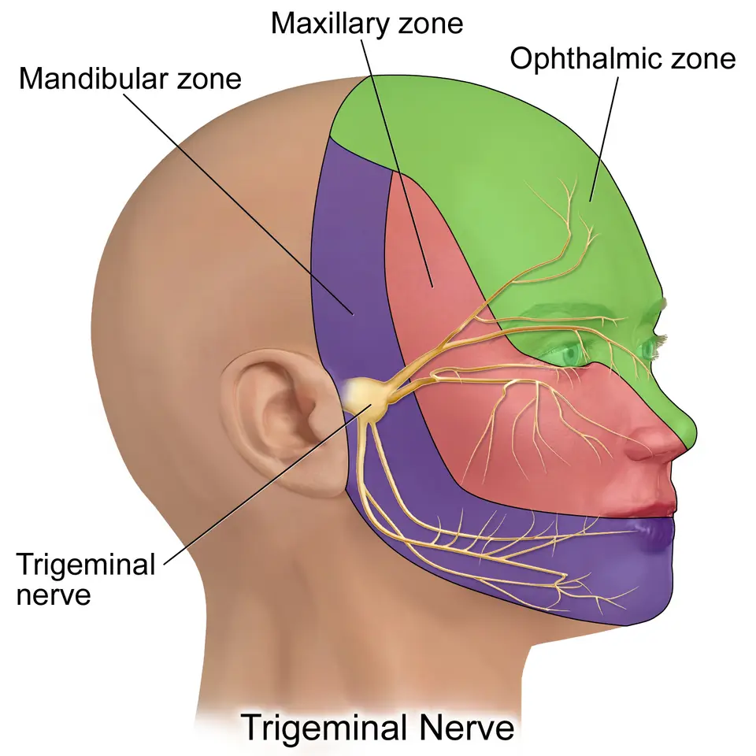
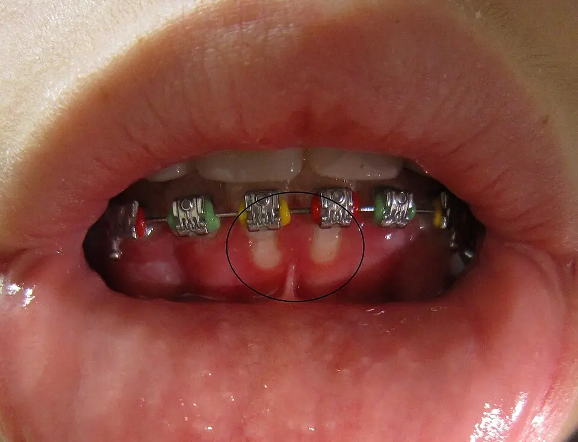

DX.6 — Gingivostomatite herpétique
La gingivostomatite herpétique est la forme buccale visible d’une primo-infection par le HSV-1, surtout chez le petit enfantS1S5. Elle guérit seule en deux semaines, mais la douleur empêche de boire, et la déshydratation domine alors le risqueS5S6. Un aciclovir oral débuté tôt raccourcit la maladie, tandis qu’un corticoïde local reste contre-indiquéS7S12.
1. Définition
La gingivostomatite herpétique correspond à une primo-infection par le virus herpès simplex de type 1, ou HSV-1, qui atteint la gencive et la muqueuse buccaleS1S5. Elle associe une fièvre, des vésicules groupées qui se rompent en érosions douloureuses et une gencive tuméfiée, rouge et saignanteS1S5.
2. Épidémiologie (Suisse, puis Europe)
En Suisse, la plupart des adultes portent des anticorps contre le HSV-1, alors que peu se souviennent d’une primo-infection symptomatiqueS1S2. Le tableau des chiffres sépare la séroprévalence, la proportion de formes visibles et le poids aux urgences pédiatriquesS2S4S5. L’histoire naturelle montre une maladie brève, mais un virus qui reste latent toute la vieS5.
Infection, maladie visible et recours aux urgences : données chiffrées
| Donnée | Population et mesure | Année | Source |
|---|---|---|---|
| Anticorps anti-HSV-1 chez 80,0 % des adultes de 35 à 64 ans S2 | 3120 sérums de Suisse romande et du Tessin, enquête de population 1992-1993 S2 | 2004 | S2 |
| Anticorps anti-HSV-1 chez 77 % des volontaires ; séroconversion annuelle estimée à 4,6 % S3 | 151 adultes à faible risque de la région bâloise S3 | 2000 | S3 |
| Seuls 10 à 20 % des enfants infectés auraient présenté des signes de primo-infection S1 | Synthèse de la Revue Médicale Suisse S1 | 2008 | S1 |
| La primo-infection est symptomatique chez 13 à 30 % des enfants et adolescents S5 | Revue systématique italienne S5 | 2023 | S5 |
| Une gingivostomatite pour 303 passages ; 372 des 702 gingivostomatites étaient herpétiques S4 | Urgences pédiatriques de l’hôpital Armand-Trousseau, Paris, 2008-2013 S4 | 2019 | S4 |
| Âge médian de 22 mois ; 78,1 % des enfants avaient moins de 36 mois S4 | Même cohorte parisienne, toutes gingivostomatites confondues S4 | 2019 | S4 |
| Hospitalisation de 48 enfants sur 702, soit 6,8 % S4 | Même cohorte, toutes étiologies virales S4 | 2019 | S4 |
Ces chiffres suisses mesurent une infection passée, et non une maladie ; ils montrent que le virus circule chez presque tous les adultesS2S3. Aucune incidence suisse de la gingivostomatite elle-même n’est publiée ; les chiffres parisiens donnent l’ordre de grandeur aux urgencesS4.
Histoire naturelle et âges de survenue
Deux pics d’âge se dessinent : l’enfant de six mois à cinq ans, puis l’adulte jeune de 20 à 30 ansS1. Chez la personne âgée, la primo-infection reste possible, mais elle se manifeste par un tableau plus discretS5.
Sans traitement, la maladie guérit en 10 à 14 jours, sans cicatrice, mais la douleur limite l’alimentation pendant cette périodeS5. Le virus gagne ensuite le ganglion trigéminal, où il persiste à vie et peut provoquer des récurrencesS5.
Ces récurrences sont en général moins sévères que la primo-infection et prennent souvent la forme d’un herpès labialS5S1. Les complications graves restent rares, mais elles comprennent l’érythème polymorphe, la méningite aseptique et l’encéphaliteS5.
3. Physiopathologie
La base à connaître rappelle le trajet du virus, de la muqueuse au ganglion trigéminal, puis le retour vers la peauS5. La chaîne causale relie chaque étape de l’infection à un signe clinique visibleS1S5. La corrélation associe chaque perturbation à son exploration et à son traitementS1S5S10.
Base à connaître : virus, muqueuse et nerf trijumeau
Le HSV-1 est un virus à ADN (acide désoxyribonucléique) double brin de la famille des Herpesviridae, qui infecte de nombreux types cellulairesS5. Il établit une infection latente dans un tissu cible précis, puis il peut se réactiver par intervallesS5.
La transmission se fait par le contact direct avec une lésion ou par la salive d’un porteur sainS1. L’excrétion virale est plus forte chez l’immunodéprimé et pendant la phase prodromique de la primo-infectionS5.
La chaleur, le froid, un traumatisme, la fièvre, le stress et une baisse de l’immunité peuvent déclencher la réactivationS5.
Nerf trijumeau et ses trois territoires cutanés, vue latérale. Ce schéma médical en couleur montre le ganglion où le virus devient latent après la primo-infection.

Le lecteur repère d’abord seul, sur ce schéma brut, le ganglion et les trois zones colorées.
Sur la copie annotée, quatre cercles rouges numérotés désignent le ganglion et les trois territoires du nerf.
- Le ganglion trigéminal, en arrière de la joue, héberge le virus latent après la primo-infection.
- La zone ophtalmique, en vert, couvre le front et l’œil, que le virus peut atteindre par la branche correspondante.
- La zone maxillaire, en rouge, couvre la joue et la lèvre supérieure, siège habituel de l’herpès labial récurrent.
- La zone mandibulaire, en violet, couvre la lèvre inférieure et le menton, où siègent aussi les vésicules péribuccales.
- Les zones colorées montrent l’innervation cutanée, alors que la primo-infection touche d’abord la muqueuse buccale et la gencive.
- Le schéma ne montre pas le virus ; il situe seulement le relais nerveux de la latence.
Ce que le schéma décide. Une vésicule ou une rougeur de l’œil chez un enfant malade fait chercher une atteinte de la branche ophtalmique et demander un avis spécialisé.

Chaîne causale en quatre temps
| Temps | Mécanisme | Traduction clinique |
|---|---|---|
| 1. Contamination | Contact avec une lésion ou avec la salive d’un porteur sain S1 | Contage familial possible, comme dans la fratrie de l’observation suisse S1 |
| 2. Incubation | Réplication virale silencieuse pendant trois à six jours selon la synthèse suisse, deux à quinze jours selon la revue italienne S1S5 | Prodromes : fièvre, asthénie, myalgies, perte d’appétit, irritabilité et céphalée S5 |
| 3. Lyse épithéliale | Vésicules de 1 à 2 mm, groupées, qui se rompent vite en érosions S5 | Érosions grisâtres à liseré rouge, gencive tuméfiée, haleine fétide et hypersialorrhée S1S5 |
| 4. Latence | Migration du virus vers le ganglion trigéminal S5 | Récurrences possibles, souvent sous forme d’herpès labial S5S1 |
La douleur des érosions explique le refus de boire, qui conduit à la déshydratation chez le petit enfantS5S6.
Corrélation : perturbation, exploration, thérapeutique
| Perturbation | Exploration | Conséquence thérapeutique |
|---|---|---|
| Réplication virale active des premiers jours S7 | Durée des symptômes à l’anamnèse S7 | Aciclovir oral s’il est débuté dans les trois premiers jours S7S5 |
| Érosions douloureuses et refus de boire S5 | Poids, diurèse, muqueuses et état de conscience S6 | Antalgie, hydratation, hospitalisation si l’apport oral échoue S5S6 |
| Élimination rénale de l’aciclovir S10 | Évaluation de l’hydratation avant la prescription S10 | Apport liquidien suffisant pendant le traitement S10 |
| Extension oculaire ou neurologique S5 | Examen des yeux et de la conscience S5 | Orientation urgente vers le spécialiste ou l’hôpital S5 |
4. Démarche diagnostique
Devant un enfant fébrile qui a mal dans la bouche et refuse de boire, le médecin évalue d’abord l’hydratation, puis l’œil et la conscienceS5S6. Le tableau discriminant indique d’abord les diagnostics graves, puis les diagnostics fréquents de la bouche ulcéréeS1S5S6. La comparaison des trois viroses buccales de l’enfant sépare les tableaux que l’on confond le plus souventS4S1. L’erreur classique consiste à poser un corticoïde local sur une gencive herpétiqueS12.
Diagnostics discriminants : les graves d’abord
| Diagnostic | Élément qui l’évoque | Élément qui l’écarte ici | Renvoi |
|---|---|---|---|
| Déshydratation compliquant la gingivostomatite S6 | Enfant apathique ou agité, bouche et yeux secs S6 | Absence des signes de déshydratation décrits S6 | Point 11 |
| Encéphalite herpétique S5 | Troubles de la conscience ou du comportement S5 | Enfant éveillé, réactif, sans signe neurologique S5 | Point 11 |
| Atteinte oculaire herpétique S5 | Vésicules ou ulcères de l’œil, lésion de la cornée S5 | Œil blanc et indolore S5 | Point 6 |
| Syndrome de Stevens-Johnson S1 | Érosions buccales plus vastes et étendues S1 | Érosions petites, groupées, centrées sur la gencive S1 | Point 7 |
| Herpangine ou syndrome main-pied-bouche S1S4 | Lésions palmo-plantaires dans le syndrome main-pied-bouche S1 | Gencive tuméfiée et peau des extrémités indemne S1 | DX.1 |
| Aphtose, forme herpétiforme comprise S5 | Ulcères buccaux récidivants, parfois herpétiformes S5 | Tableau trop bruyant pour une poussée d’aphtose S1 | DX.4 |
| Ulcération traumatique S6 | Ulcère unique au contact d’une dent ou d’un appareil S6 | Lésions multiples et fièvre S6 | DX.5 |
| Ulcère qui persiste trois semaines ou plus S6 | Ulcération inexpliquée et durable S6 | Évolution aiguë et guérison en deux semaines S5 | DX.9 |
La revue italienne ajoute la mononucléose infectieuse, l’érythème polymorphe mineur, la gingivite ulcéro-nécrotique aiguë et la varicelleS5. Les causes hématologiques, comme la leucémie ou la neutropénie, entrent dans la liste écossaise des ulcérations buccalesS6.
Gingivostomatite herpétique, herpangine et syndrome main-pied-bouche
La cohorte parisienne regroupait 372 gingivostomatites herpétiques, 149 herpangines et 181 syndromes main-pied-bouche, ce qui montre leur fréquence comparableS4. Ces trois infections virales partagent la fièvre et la douleur buccale, mais elles diffèrent par le siège des lésionsS4S1.
| Critère | Gingivostomatite herpétique | Herpangine ou main-pied-bouche |
|---|---|---|
| Gencive | Rouge, tuméfiée, érodée S5 | Atteinte gingivale non décrite dans la synthèse suisse S1 |
| Peau | Vésicules péribuccales, sur le menton ou les ailes du nez S1 | Lésions palmo-plantaires dans le syndrome main-pied-bouche S1 |
| Douleur et alimentation | Douleur ou gêne alimentaire chez 84,4 % des enfants S4 | Codéine prescrite chez 45,0 % et 42,0 % des enfants avant 2013, contre 84,4 % S4 |
| Virus | HSV-1 S1 | Virus coxsackie A16 (sérotype du groupe A) pour le syndrome main-pied-bouche S1 |
La part de codéine prescrite montre que la gingivostomatite herpétique était la plus douloureuse des troisS4. Les auteurs parisiens jugent donc essentiel de remplacer la codéine par des schémas antalgiques au moins aussi efficacesS4.
Erreur classique : le corticoïde local sur une gencive herpétique
Le réflexe de traiter des « aphtes » par une pâte corticoïde aggrave le risque, car la lésion virale n’est pas une aphtoseS12S1. L’AIPS (information professionnelle suisse) de la triamcinolone buccale est formelle, et le tableau suivant reproduit sa contre-indication mot pour motS12.
| Médicament | Contre-indication selon l’AIPS |
|---|---|
| Kenacort®-A Orabase (n° 35039) | « Kenacort-A Orabase est contre-indiqué lors d'infections mycosiques ou bactériennes, particulièrement de la cavité bucco-pharyngée, lors d'une varicelle et d'autres infections virales, lors de réactions à un vaccin et de lésions intraorales telles que la gingivite herpétique primaire et l'angine herpétique. » S12 |
Une seconde erreur consiste à attendre le résultat virologique avant de traiter, alors que la synthèse suisse recommande de débuter l’aciclovir avant ce résultatS1. Le délai diagnostique, estimé à 72 heures, réduit en effet l’efficacité de tout antiviralS5.
5. Anamnèse ciblée et drapeaux rouges
La chronologie fixe le jour du début, car elle décide de l’intérêt de l’antiviralS7S5. L’évaluation de la prise orale recherche la déshydratation, première complication de la maladieS5S6. Le contage et le terrain orientent le diagnostic et la gravité, et les drapeaux rouges imposent une évaluation urgenteS1S5S6.
Chronologie des symptômes
Le médecin demande le jour d’apparition de la fièvre, puis celui des lésions buccales, car les lésions suivent les prodromes de un à trois joursS5. L’essai israélien n’a inclus que des enfants dont la gingivostomatite durait depuis moins de 72 heuresS7.
Dans l’observation suisse, le premier enfant consultait au septième jour, et son prélèvement viral restait négatifS1. Sa sœur, vue plus tôt, avait au contraire des prélèvements positifs pour le HSV-1S1.
Une ulcération présente depuis trois semaines ou plus change de catégorie, car elle impose de chercher une dysplasie ou un cancerS6.
Prise orale, douleur et hydratation
| Question | Ce qu’elle recherche |
|---|---|
| L’enfant boit-il, et combien depuis la veille ? S6 | Le refus de boire causé par la douleur S5 |
| Mange-t-il, ou refuse-t-il tout aliment ? S1 | Le refus d’alimentation, présent dans l’observation suisse S1 |
| Est-il fatigué, étourdi, apathique ou agité ? S6 | Les signes de déshydratation décrits par le guide écossais S6 |
| Bave-t-il plus que d’habitude ? S1 | L’hypersialorrhée, qui fait partie du tableau S1S5 |
| Quels antalgiques a-t-il déjà reçus ? S4 | L’efficacité de l’antalgie avant la consultation S4 |
Dans la cohorte parisienne, 84,4 % des enfants atteints de gingivostomatite herpétique avaient une douleur ou des difficultés alimentairesS4.
Contage, antécédents et terrain
Le médecin cherche un contage, car la maladie peut toucher plusieurs enfants d’une même fratrie à quelques jours d’intervalleS1. Il demande aussi si un adulte de l’entourage présente un herpès labial, puisque la salive d’un porteur sain suffit à transmettre le virusS1.
L’immunodépression aggrave la maladie et fait envisager l’hospitalisation de l’enfantS5. Une prise médicamenteuse récente ou une maladie sous-jacente oriente vers une autre cause d’ulcération et vers un avis médicalS6.
Chez l’adulte jeune, le médecin cherche une primo-infection, puisque le second pic d’incidence se situe entre 20 et 30 ansS1.
Drapeaux rouges
| Drapeau rouge | Pourquoi | Conduite |
|---|---|---|
| Déshydratation sévère S6 | Complication la plus fréquente S5 | Soins médicaux d’urgence S6 |
| Signes de déshydratation débutante S6 | Risque d’aggravation rapide chez le petit enfant S5 | Avis médical urgent S6 |
| Troubles de la conscience ou convulsions S5 | Encéphalite possible S5 | Hospitalisation immédiate S5 |
| Atteinte de l’œil S5 | Kératite herpétique possible S5 | Avis ophtalmologique rapide S5 |
| Immunodépression connue S5 | Forme grave ou disséminée S5 | Hospitalisation à envisager S5 |
| Odynophagie, vomissements, brûlure rétrosternale S5 | Œsophagite herpétique par extension S5 | Évaluation hospitalière S5 |
| Ulcère inexpliqué depuis trois semaines ou plus S6 | Dysplasie ou cancer à exclure S6 | Adresser selon la filière urgente S6 |
La colonne « Conduite » déduit l’orientation de la gravité décrite, sauf pour la déshydratation et l’ulcère durable, que le guide écossais oriente lui-mêmeS5S6.
6. Examen physique ciblé, région par région
L’examen va de l’état général vers la bouche, puis vers l’œil et le cou, avec des gants, car les lésions virales sont contagieusesS6. Les fenêtres couvrent l’état général et l’hydratation, les lèvres et la peau péribuccale, la gencive et la muqueuse buccaleS1S5S6. Elles couvrent aussi l’oropharynx, les yeux et le cou, qui orientent vers une complication ou un autre diagnosticS1S5.
État général et hydratation
Le médecin mesure la température, car la fièvre dépasse souvent 39 °C dans la primo-infection herpétiqueS1. Il juge ensuite l’hydratation sur l’état de vigilance, la sécheresse des lèvres, de la bouche et des yeuxS6.
Un enfant apathique ou agité, dont les ulcérations sont sévères, peut être déshydraté et doit être pris en charge rapidementS6. L’altération de l’état général fait partie du tableau habituel, mais elle n’autorise pas à méconnaître une encéphaliteS1S5.
Lèvres et peau péribuccale
Le signe recherché est un groupe de vésicules en bouquet, ou déjà croûteuses, sur les lèvres, le menton ou les ailes du nezS1. Dans l’observation suisse, la lèvre inférieure portait un œdème croûteux et hémorragique sur un placard rouge mal limitéS1.
Ces lésions hors de la bouche orientent vers le HSV-1, car l’aphtose épargne la peau péribuccaleS1. Dans l’essai israélien, les lésions péribuccales disparaissaient plus vite sous aciclovir que sous placeboS7.
Gencive : la signature de la primo-infection
Le signe recherché est une gingivite aiguë : gencive rouge, tuméfiée et œdémateuse, avec des érosions à fond jaune grisâtreS5S1. La gencive est l’un des sièges les plus fréquents, avec la muqueuse labiale et le palaisS5.
Gingivostomatite herpétique, gencive inférieure, photographie clinique. Cette photographie en couleur montre la bouche entrouverte d’un patient qui porte un appareil orthodontique.

Le lecteur cherche d’abord seul, sur la photographie brute, les ulcérations et la gencive qui les porte.
Sur la copie annotée, trois cercles rouges numérotés signalent les lésions que décrit la lecture guidée.
- Une ulcération à fond blanc jaunâtre siège sur la gencive, sous l’incisive centrale inférieure droite du patient.
- Une seconde ulcération de même aspect occupe la gencive voisine, ce qui montre des lésions multiples et proches.
- La gencive marginale reste rouge et gonflée autour des dents, signe de la gingivite qui accompagne les érosions.
- Le cercle noir figure sur l’image d’origine ; il ne remplace pas la recherche des autres lésions de la bouche.
- L’appareil orthodontique peut blesser la gencive, mais une plaie traumatique reste en général unique et sans fièvre.
Ce que la photographie décide. Des ulcérations gingivales multiples sur une gencive enflammée, avec de la fièvre, font retenir la primo-infection herpétique et traiter sans attendre.

Un tableau fébrile aussi bruyant écarte une simple poussée d’aphtose, selon la synthèse suisseS1.
Langue, palais et muqueuse buccale
Le médecin recherche de petites érosions grisâtres qui sont entourées d’un liseré rouge vif sur le palais dur et la langueS1. Ces érosions peuvent confluer en ulcérations polycycliques, couvertes d’un enduit qui ressemble à une fausse membraneS1.
La langue apparaît souvent saburrale, et l’haleine devient fétideS5S1. L’examen reste parfois difficile chez le petit enfant à cause de la douleur, comme chez la sœur décrite dans l’observation suisseS1.
Oropharynx
Une atteinte pharyngée peut accompagner la primo-infection, mais elle reste moins fréquente que l’atteinte gingivaleS5. Le syndrome main-pied-bouche, dû au virus coxsackie A16, associe des ulcérations buccales et des lésions palmo-plantaires qu’il faut chercherS1.
Une odynophagie marquée, des vomissements et une brûlure rétrosternale doivent faire évoquer une extension œsophagienneS5.
Yeux
Le médecin examine les paupières et la conjonctive, car une atteinte oculaire peut compliquer la primo-infectionS5. L’atteinte herpétique de l’œil associe des vésicules, des ulcères, des lésions dendritiques de la cornée, une opacité et un œdèmeS5.
Par déduction, une rougeur oculaire douloureuse justifie un avis ophtalmologique rapide, car l’herpès oculaire est la première cause de cécité cornéenne aux États-UnisS5.
Cou et aires ganglionnaires
Le médecin palpe les aires sous-mandibulaires et cervicales, où les ganglions deviennent sensibles pendant la primo-infectionS1S5. Des adénopathies sensibles sous-mandibulaires étaient présentes chez la fillette de l’observation suisseS1.
Par déduction, une adénopathie qui persiste avec un ulcère inexpliqué de trois semaines ou plus rejoint la filière de suspicion de cancer du guide écossaisS6.
7. Approche syndromique
Quatre présentations se distinguent selon l’âge, le caractère primaire ou récurrent et la présence d’une complicationS1S5. Le tableau syndromique les sépare, car chacune appelle un niveau de prise en charge différentS5S6.
Syndromes : 7.1 à 7.4
| Syndrome | Signes fonctionnels | Signes physiques | Mécanisme et terrain |
|---|---|---|---|
| 7.1 Primo-infection de l’enfant | Fièvre, douleur buccale, refus de manger et de boire, hypersialorrhée S1 | Gingivite aiguë, érosions groupées, vésicules péribuccales, adénopathies sensibles S1S5 | Premier contact avec le HSV-1, entre six mois et cinq ans S1 |
| 7.2 Primo-infection de l’adulte jeune | Douleur buccale, malaise, fièvre S1 | Lésions buccales de même type que chez l’enfant S1S5 | Second pic d’incidence entre 20 et 30 ans S1 |
| 7.3 Herpès labial récurrent | Poussées en général moins sévères que la primo-infection S5 | Lésions vésiculeuses douloureuses de la région péribuccale S5 | Réactivation du virus latent après un déclencheur S5 |
| 7.4 Forme compliquée | Apathie, troubles de la conscience, œil rouge, odynophagie S5S6 | Déshydratation, érythème polymorphe, atteinte oculaire ou œsophagienne S5 | Retard diagnostique, immunodépression S5 |
L’érythème polymorphe associe des bulles, des macules et des papules de la muqueuse et de la peau, et le virus herpès simplex en est le déclencheur viral le plus fréquentS5.
8. Diagnostic positif et critères
Le diagnostic reste clinique dans la grande majorité des cas, grâce à l’association de la fièvre, de la gingivite et des érosions groupéesS1S5. L’observation suisse décrit un diagnostic qui repose sur la clinique et le contexte familialS1. Les critères séparent ce qui suffit de ce qui ne suffit pas, et le caractère primaire se juge sur l’histoireS1S5.
Observation suisse : une stomatite familiale
Un garçon de six ans souffrait depuis sept jours de douleurs buccales, d’un refus d’alimentation, d’une hypersialorrhée et d’une fièvre souvent supérieure à 39 °CS1. Ses lèvres étaient œdématiées, et de petites érosions à fond grisâtre bordées de rouge occupaient le palais dur et la langueS1.
Deux jours plus tard, sa sœur de deux ans présentait une fièvre de 39 à 40 °C, des douleurs buccales et des ulcérations gingivalesS1. Le prélèvement du garçon, réalisé tardivement, était négatif, alors que celui de la fillette était positif pour le HSV-1S1.
Les auteurs ont débuté l’aciclovir en suspension, cinq fois 2,5 ml par jour pendant sept jours, avant le résultat virologiqueS1. Ils y ont associé des bains de bouche antiseptiques et un gel de lidocaïne, ce qui illustre la prise en charge ambulatoire complèteS1.
Ce cas montre qu’un prélèvement négatif au septième jour n’écarte pas le diagnostic quand le contexte familial est évocateurS1.
Ce qui suffit et ce qui ne suffit pas
| Élément | Valeur | Commentaire |
|---|---|---|
| Fièvre, gingivite antérieure et érosions groupées chez un petit enfant S1 | Suffit | La synthèse suisse fait évoquer la primo-infection et traiter sur ce tableau S1 |
| Vésicules en bouquet sur la lèvre, le menton ou le nez S1 | Renforce | Signe d’infection herpétique quand le groupement est net S5 |
| Contage dans la fratrie S1 | Renforce | Le contexte épidémiologique rend le tableau très évocateur S1 |
| Érosions isolées sans groupement S5 | Ne suffit pas | Les vésicules rompues donnent des érosions peu spécifiques S5 |
| Prélèvement négatif au septième jour S1 | N’exclut pas | Le virus peut avoir disparu de la lésion S1 |
| CRP (protéine C réactive) élevée S8 | N’exclut pas | Plus d’un tiers des enfants hospitalisés dépassaient 7 mg/dl S8 |
Primo-infection ou récurrence
La primo-infection associe des signes généraux et une gingivite, alors que la récurrence reste en général localisée et moins sévèreS5S1. La plupart des adultes porteurs d’anticorps ne gardent aucun souvenir de leur primo-infection, ce qui limite la valeur de l’anamnèseS1.
Chez les 91 volontaires bâlois qui rapportaient un herpès labial, 90 portaient des anticorps contre le HSV-1S3. Une sérologie positive n’établit donc pas, à elle seule, le caractère récent de l’infectionS3S5.
9. Examens complémentaires
Aucun examen n’est nécessaire dans la forme typique, mais la mise en évidence du virus reste utile dans certaines situationsS1. Les prélèvements virologiques identifient le virus, et la biologie sanguine sert surtout à évaluer une complicationS1S5S8. Les explorations des complications ne se demandent que sur un signe d’appelS5.
Prélèvements virologiques
| Examen | Ce qu’il apporte | Limite |
|---|---|---|
| Détection de l’ADN viral par PCR (amplification en chaîne par polymérase) S1 | Technique spécifique et extrêmement sensible S1 | Elle détecte même une excrétion virale asymptomatique S1 |
| Culture virale S5 | Encore considérée comme l’étalon de référence S5 | Résultat lent, prélèvement précoce et milieu de transport adapté nécessaires S1 |
| Immunofluorescence directe S1 | Distingue le HSV-1 du HSV-2 S1 | Négative si le prélèvement est tardif ou de mauvaise qualité S1 |
| Sérologie IgM et IgG anti-HSV S5 | Peut confirmer l’infection S5 | Ne date pas l’infection chez un adulte déjà porteur S3 |
Le prélèvement porte de préférence sur une vésicule ou une érosion récente, car le virus disparaît des lésions anciennesS1.
Biologie sanguine
La biologie n’entre pas dans le diagnostic de la forme typique ; elle sert à juger une déshydratation ou un terrain fragileS5S6. Dans une série israélienne de 66 enfants hospitalisés, la CRP moyenne atteignait 7,4 mg/dlS8.
Plus d’un tiers de ces enfants dépassaient 7 mg/dl, sans surinfection bactérienne retenueS8. Une CRP élevée ne suffit donc pas à imposer un antibiotique chez un enfant atteint de gingivostomatite herpétiqueS8.
Explorations des complications
| Situation | Exploration | But |
|---|---|---|
| Troubles de la conscience ou convulsions S5 | Bilan hospitalier de l’encéphalite S5 | Ne pas retarder le traitement d’une encéphalite, dont la mortalité atteint 20 à 30 % chez l’adulte S5 |
| Œil rouge, vésicule palpébrale S5 | Examen ophtalmologique spécialisé S5 | Rechercher une atteinte de la cornée S5 |
| Odynophagie, vomissements S5 | Avis spécialisé, par déduction de la gravité décrite S5 | Rechercher une œsophagite herpétique S5 |
| Ulcère qui persiste trois semaines ou plus S6 | Avis spécialisé et biopsie S6 | Exclure une dysplasie ou un cancer S6 |
10. Arbre décisionnel
L’arbre part d’un patient fébrile qui présente des érosions buccales douloureuses et une gingivite ; il traite les situations graves en premierS1S5. Les branches 2 à 4 déduisent l’orientation de la gravité des complications décrites, alors que les autres suivent directement les sourcesS5S6S7.
- Si l’enfant est sévèrement déshydraté, apathique ou ne boit plus, le médecin l’adresse en urgence pour une réhydratationS6S5.
- Si la conscience est altérée ou si des convulsions surviennent, il fait hospitaliser l’enfant sans délai, car une encéphalite est possibleS5.
- Si l’œil est rouge ou porte une vésicule, il demande un avis ophtalmologique rapideS5.
- Si le patient est immunodéprimé, il envisage l’hospitalisation et un traitement antiviral systémiqueS5S10.
- Si le tableau typique date de moins de 72 heures, il prescrit l’aciclovir oral selon l’AIPS, avec antalgie et hydratationS7S10.
- Si le tableau date de plus de 72 heures, il privilégie l’antalgie et l’hydratation, car l’antiviral perd son efficacitéS5.
- Si un ulcère persiste trois semaines ou plus, il adresse le patient pour exclure une lésion maligne, voir DX.9S6.
11. Prise en charge selon les recommandations suisses
11.A Le but est de soulager la douleur, de maintenir l’hydratation et de raccourcir la maladie et la contagiosité par un antiviral précoceS1S5. Un critère chiffré guide le choix : l’essai israélien a traité les enfants dans les trois premiers jours, et les lésions duraient 4 jours contre 10 sous placeboS7.
11.B La conduite chronologique d’urgence vise la déshydratation, l’œil et le cerveau avant tout traitement de la boucheS5S6. Le traitement symptomatique repose sur l’antalgie, l’hydratation et les soins locaux, et l’ordre du traitement place l’antiviral selon le délaiS1S4S5.
La pharmacologie antivirale repose sur deux molécules, décrites par leur AIPS : l’aciclovir, seul utilisable chez l’enfant, et le valaciclovir chez l’adulteS1S10S11. Les règles de choix et divergences tranchent entre l’AIPS et les schémas publiés, et les situations spéciales modifient la conduiteS10S11S1.
L’information aux parents fait partie du traitement, car elle conditionne l’hydratation à domicileS6S10.
11.C La surveillance porte sur l’hydratation, la douleur, l’apparition de complications et la tolérance de l’aciclovirS5S10.
11.D Le pronostic est excellent dans la forme typique, et des critères énumérés fixent la guérison et le retour en collectivitéS5S7.
Urgence — conduite chronologique
| Délai | Geste | Raison |
|---|---|---|
| Dès l’accueil | Évaluer la vigilance, l’hydratation, l’œil et le terrain immunitaire S5S6 | Repérer les formes qui relèvent de l’hôpital S5 |
| Même consultation | Donner un antalgique et vérifier que l’enfant arrive à boire S4S6 | La douleur empêche la prise orale S5 |
| Même consultation | Prescrire l’aciclovir oral si les symptômes durent depuis moins de 72 heures S7S10 | L’efficacité diminue au-delà de ce délai S5 |
| Si échec de la prise orale | Adresser pour une réhydratation à l’hôpital S5S6 | Certains enfants doivent être hospitalisés pour recevoir des liquides S5 |
Dans la cohorte parisienne, 6,8 % des enfants vus aux urgences pour une gingivostomatite ont été hospitalisésS4.
Traitement symptomatique : antalgie, hydratation, soins locaux
L’antalgie conditionne la prise orale ; la cohorte parisienne rappelle que la codéine, autrefois très utilisée, a été restreinte en 2013S4. Les auteurs parisiens citent l’association de l’ibuprofène et du paracétamol, ou la morphine associée au paracétamol, recommandées par la Haute Autorité de santé françaiseS4.
Dans l’observation suisse, les soins locaux associaient des bains de bouche antiseptiques et un gel de lidocaïne appliqué trois fois par jourS1. Le guide écossais recommande une antalgie optimale, une alimentation molle et des antalgiques locaux, et il rappelle une guérison en une à deux semainesS6.
La chlorhexidine peut ne pas convenir avant 12 ans, et son autorisation chez l’enfant varie selon les marquesS6. Le guide écossais déconseille l’antibiotique en l’absence de signes d’infection qui s’étend ou d’infection systémiqueS6.
Ordre du traitement
- Le médecin écarte d’abord la déshydratation, l’encéphalite et l’atteinte oculaire, qui imposent l’hôpitalS5S6.
- Il prescrit ensuite l’antalgie et organise l’hydratation, qui restent le socle du traitement quel que soit le délaiS5S6.
- Il ajoute l’aciclovir oral si les symptômes durent depuis moins de trois jours, sans attendre le résultat virologiqueS1S7.
- Il renonce au corticoïde local, que l’AIPS de la triamcinolone buccale contre-indique dans la gingivite herpétique primaireS12.
- Il explique enfin les mesures contre la transmission et fixe un contrôleS10S1.
La revue systématique italienne ne retient qu’un essai randomisé, celui de l’aciclovir, avec un niveau de preuve faibleS5. La revue Cochrane sur l’aciclovir dans cette indication a été retirée en 2016, parce qu’elle était dépasséeS9.
Aciclovir — Zovirax® comprimés pelliculés et suspension (n° 45343)
| Rubrique | Contenu de l’AIPS |
|---|---|
| Classe | Antiviral, élimination rénale S10 |
| Indication | « Infections de la peau et des muqueuses, notamment primo-infection et récidives d'herpès génital et d'herpès labial. » S10 |
| Adulte et enfant de plus de 12 ans | 200 mg 5 fois par jour, toutes les 4 heures, pause nocturne de 8 heures ; durée de 5 jours et plus S10 |
| Enfant de plus de 2 ans | Dose de l’adulte S10 |
| Enfant de moins de 2 ans | La moitié de la dose de l’adulte ; nouveau-né : voir l’administration intraveineuse S10 |
| Forme | Suspension à 400 mg/5 ml, avec mesurettes de 2,5 ml et de 5 ml ; « La suspension ne doit pas être diluée. » S10 |
| Mise en garde | Une SCAR (réaction indésirable cutanée sévère) impose l’arrêt immédiat de l’aciclovir S10 |
| Contre-indications | « L'usage de Zovirax est contre-indiqué en cas d'hypersensibilité connue (y compris p.ex. de SCAR, une réaction d'hypersensibilité retardée médiée par les lymphocytes T) à l'aciclovir, au valaciclovir ou à l'un des excipients contenus dans Zovirax ( comprimés pelliculés ou suspension ). » S10 |
| Grossesse | « Néanmoins, pendant la grossesse, le traitement intraveineux et oral n'est indiqué qu'en cas de nécessité impérieuse » S10 |
| Allaitement | « Après l'administration orale de 200 mg 5 fois par jour, on a trouvé, dans le lait maternel, des concentrations d'aciclovir qui représentaient 0,6 à 4,1 fois le taux plasmatique. » « C'est pourquoi il ne faut pas utiliser Zovirax pendant l'allaitement. » S10 |
| Hydratation | « Il faut veiller à assurer un apport liquidien suffisant, surtout chez les patients traités par de fortes doses orales d'aciclovir. » S10 |
Chez l’enfant de plus de deux ans, la synthèse suisse traduit la dose de l’AIPS en 200 mg, soit 2,5 ml de suspension, cinq fois par jour pendant sept joursS1S10. Le contexte de l’enfant déshydraté rend la consigne d’hydratation de l’AIPS particulièrement importanteS10S5.
Valaciclovir — Valaciclovir-Mepha 500/1000 Lactab® (n° 58921)
| Rubrique | Contenu de l’AIPS |
|---|---|
| Classe | Promédicament de l’aciclovir, élimination rénale de l’aciclovir S11 |
| Indication | Infections herpétiques cutanées et muqueuses, y compris la primo-infection S11 |
| Adulte, herpès | 500 mg 2 fois par jour ; 5 jours en cas de récidive, jusqu’à 10 jours pour une primo-infection plus sévère S11 |
| Prévention des récidives, immunocompétent | 500 mg une fois par jour, avec une interruption au plus tard après 12 mois S11 |
| Contre-indications | « L'usage de Valaciclovir-Mepha est contre-indiqué en cas d'hypersensibilité avérée (y compris p.ex. en cas de réaction indésirable cutanée sévère (SCAR) telle que réaction d'hypersensibilité retardée médiée par les lymphocytes T) au valaciclovir, à l'aciclovir ou à l'un des excipients selon la composition. » S11 |
| Grossesse | « Valaciclovir-Mepha ne doit pas être utilisé pendant la grossesse, sauf en cas de nécessité absolue et uniquement à la dose recommandée. » S11 |
| Allaitement | « L'aciclovir passe dans le lait maternel. » « La prudence s'impose lorsque Valaciclovir-Mepha est administré aux femmes qui allaitent. » S11 |
La synthèse suisse rappelle que le valaciclovir n’a pas été évalué chez l’enfant, qui reçoit donc l’aciclovir en suspensionS1.
Règles de choix et divergences
L’essai israélien a utilisé 15 mg/kg cinq fois par jour pendant sept jours, schéma hors AIPS que la synthèse suisse rapporte sans l’imposerS7S1. La synthèse suisse propose plus simplement la dose de l’AIPS, avec une demi-dose avant deux ansS1S10.
Chez l’adulte, la synthèse suisse de 2008 propose le valaciclovir à 1 g deux fois par jour pendant sept jours, schéma hors AIPSS1. L’AIPS actuelle du valaciclovir prévoit 500 mg deux fois par jour, prolongés jusqu’à 10 jours pour une primo-infection sévèreS11.
Cette divergence se tranche ici selon l’AIPS, plus récente et opposable, et la dose publiée reste une donnée d’essaiS11S1. La brivudine semble peu efficace sur le virus herpès simplex, et la synthèse suisse déconseille son emploi dans cette indicationS1.
Situations spéciales
| Situation | Conduite | Source |
|---|---|---|
| Enfant de moins de deux ans S10 | Demi-dose de l’adulte selon l’AIPS de l’aciclovir S10 | S10 |
| Nouveau-né S10 | Administration intraveineuse, hors du cadre ambulatoire S10 | S10 |
| Insuffisance rénale ou patient âgé S10 | Posologie réduite et surveillance neurologique étroite S10 | S10 |
| Immunodépression S5 | Hospitalisation à envisager ; prévention selon l’AIPS dans les cas désignés S5S10 | S5S10 |
| Grossesse S10S11 | Aciclovir seulement en cas de nécessité impérieuse ; valaciclovir seulement en cas de nécessité absolue S10S11 | S10S11 |
| Allaitement S10S11 | Zovirax à ne pas utiliser ; prudence avec le valaciclovir S10S11 | S10S11 |
| Antécédent de réaction cutanée sévère S10 | Plus jamais d’aciclovir ni de valaciclovir S10 | S10 |
Information aux parents et au patient
Le médecin explique que les ulcères guérissent en général en une à deux semaines, et que l’enjeu immédiat est de faire boire l’enfantS6. Il conseille une alimentation molle et une antalgie optimale, comme le recommande le guide écossais pour l’enfantS6.
Il décrit les signes qui doivent faire reconsulter : enfant qui ne boit plus, somnolence, agitation, bouche et yeux secs, ou œil rougeS6S5. Il rappelle que le virus se transmet par la salive et par le contact avec les lésions, surtout quand elles sont récentesS1S10.
Par déduction de ce mode de transmission, les parents évitent de partager couverts et verres, et ils se lavent les mains après les soinsS1. Il précise enfin que des poussées d’herpès labial peuvent survenir plus tard, car le virus reste latentS5.
Surveillance
Le médecin organise un contrôle rapproché si la prise orale reste fragile, car le guide écossais fait consulter en urgence dès les premiers signes de déshydratationS6. Il contrôle la quantité bue, la diurèse et l’éveil, car la déshydratation reste la complication la plus fréquenteS5S6.
Sous aciclovir, il veille à un apport liquidien suffisant et cherche des signes de réaction cutanée sévère, qui imposent l’arrêt immédiatS10. L’AIPS mentionne en effet des réactions cutanées sévères, dont le syndrome de Stevens-Johnson et l’érythème polymorpheS10.
Une conscience qui baisse, un œil qui rougit ou une déglutition qui devient impossible fait réévaluer le patient le jour mêmeS5.
Pronostic, guérison et retour en collectivité
La maladie guérit en 10 à 14 jours sans cicatrice dans la forme typique de l’enfant immunocompétentS5. Sous aciclovir débuté tôt, la fièvre disparaissait en 1 jour contre 3, et les difficultés à boire en 3 jours contre 6S7.
L’excrétion virale durait 1 jour sous aciclovir contre 5 sous placebo, ce qui réduit la contagiosité de l’enfantS7. L’encéphalite herpétique de l’adulte a une mortalité de 20 à 30 % et laisse des séquelles neurologiquesS5.
La guérison et le retour en collectivité reposent sur des critères cliniques simplesS5S6S10.
- L’enfant boit et s’alimente à nouveau sans douleur limitanteS5S6.
- La fièvre a disparu et l’état général s’est normaliséS7.
- Les érosions sont en voie de cicatrisation, sans nouvelle vésiculeS5.
- Les parents connaissent les signes de déshydratation et le risque de transmission tant que des lésions récentes persistentS6S10.
12. Prévention
La prévention primaire limite la transmission ; par déduction du mode de contage, l’adulte qui porte un herpès labial évite d’embrasser l’enfantS1S5. Le soignant n’examine pas les lésions virales à mains nues, à cause du risque infectieuxS6.
La prévention secondaire repose sur l’information du patient : l’AIPS demande d’informer du risque de transmission, surtout quand les lésions sont récentesS10. Un diagnostic posé dans les trois premiers jours permet aussi de raccourcir l’excrétion virale grâce à l’aciclovirS7.
La prévention tertiaire vise les récurrences fréquentes et prolongées, pour lesquelles l’AIPS du valaciclovir prévoit un traitement préventif interrompu au plus tard après 12 moisS11. Les auteurs bâlois soulignaient déjà en 2000 l’enjeu du développement de vaccins contre le virus herpès simplexS3.
13. Points clés
- La gingivostomatite herpétique traduit une primo-infection par le HSV-1, surtout entre six mois et cinq ansS1.
- La gencive rouge et tuméfiée, les érosions groupées et la fièvre suffisent au diagnostic dans la forme typiqueS1S5.
- La déshydratation reste la complication la plus fréquente, et l’hydratation passe avant tout traitement de la boucheS5S6.
- L’aciclovir oral débuté dans les trois premiers jours raccourcit la maladie et la contagiositéS7.
- L’AIPS de la triamcinolone buccale contre-indique le corticoïde local dans la gingivite herpétique primaireS12.
- Zovirax ne doit pas être utilisé pendant l’allaitement selon son AIPSS10.
14. Pièges et questions fréquentes à l'examen fédéral suisse
| Question | Bonne réponse | Raison |
|---|---|---|
| Un enfant de 2 ans a de la fièvre, une gencive tuméfiée et des érosions depuis 36 heures : faut-il attendre la PCR avant l’aciclovir ? | Non. | La synthèse suisse fait débuter l’aciclovir avant les résultats virologiques (point 11) S1 |
| Quelle complication faut-il chercher en premier chez ce petit enfant qui refuse de boire ? | La déshydratation. | C’est la complication la plus fréquente (point 5) S5 |
| Peut-on appliquer Kenacort-A Orabase sur ces érosions gingivales ? | Non. | L’AIPS le contre-indique dans la gingivite herpétique primaire (point 4) S12 |
| Quelle dose d’aciclovir l’AIPS prévoit-elle chez un enfant de 18 mois ? | La moitié de la dose de l’adulte. | Règle de l’AIPS avant deux ans (point 11) S10 |
| Le valaciclovir convient-il à un enfant de 4 ans ? | Non, l’aciclovir en suspension est préféré. | Le valaciclovir n’a pas été évalué chez l’enfant (point 11) S1 |
| Une CRP à 9 mg/dl impose-t-elle un antibiotique dans ce tableau typique ? | Non. | Plus d’un tiers des enfants hospitalisés dépassaient 7 mg/dl sans surinfection (point 9) S8 |
| Une mère allaitante a une primo-infection buccale : peut-elle recevoir Zovirax ? | Non, selon l’AIPS. | L’AIPS indique de ne pas l’utiliser pendant l’allaitement (point 11) S10 |
| Un ulcère buccal persiste depuis quatre semaines : faut-il encore parler d’herpès ? | Non, il faut exclure une lésion maligne. | Le guide écossais adresse tout ulcère de trois semaines ou plus (point 10) S6 |
| Pourquoi l’herpès revient-il sur la lèvre après la guérison ? | Par réactivation du virus latent. | Le virus persiste dans le ganglion trigéminal (point 3) S5 |
Sources
Toutes les sources ont été consultées le 12.11.2026.
- [S1] Laffitte E, Boroleanu L, Panizzon RG (Service de dermatologie et vénéréologie, Hôpitaux universitaires de Genève et CHUV, Lausanne). Une stomatite familiale. Rev Med Suisse 2008;4(176):2292. doi:10.53738/REVMED.2008.4.176.2292. revmed.ch, consulté le 12.11.2026.
- [S2] Bünzli D, Wietlisbach V, Barazzoni F, Sahli R, Meylan PRA (Institut de microbiologie, CHUV, Lausanne). Seroepidemiology of Herpes Simplex virus type 1 and 2 in Western and Southern Switzerland in adults aged 25-74 in 1992-93: a population-based study. BMC Infect Dis 2004;4:10. doi:10.1186/1471-2334-4-10. PMC395830. doi.org, consulté le 12.11.2026.
- [S3] Laubereau B, Zwahlen M, Neuenschwander B, Heininger U, Schaad UB, Desgrandchamps D (Universitäts-Kinderspital beider Basel). Herpes-simplex-Virus Typ 1 und 2 in der Schweiz. Schweiz Med Wochenschr 2000;130(5):143-50. PMID 10701231 (résumé lu). pubmed.ncbi.nlm.nih.gov, consulté le 12.11.2026.
- [S4] de Suremain N, Guedj R, Fratta A, et al. (Urgences pédiatriques, hôpital Armand-Trousseau, Paris). Acute gingivostomatitis in children: Epidemiology in the emergency department, pain, and use of codeine before its restriction. Arch Pediatr 2019;26(2):80-85. doi:10.1016/j.arcped.2018.11.004 (résumé lu). doi.org, consulté le 12.11.2026.
- [S5] Coppola N, Cantile T, Adamo D, et al. (Université de Naples Frédéric-II). Supportive care and antiviral treatments in primary herpetic gingivostomatitis: a systematic review. Clin Oral Investig 2023;27(11):6333-44. doi:10.1007/s00784-023-05250-5. PMC10630243. doi.org, consulté le 12.11.2026.
- [S6] Scottish Dental Clinical Effectiveness Programme (SDCEP). Management of Acute Dental Problems : Oral ulceration, version en ligne. sdcep.org.uk, consulté le 12.11.2026.
- [S7] Amir J, Harel L, Smetana Z, Varsano I (Schneider Children’s Medical Center, Israël). Treatment of herpes simplex gingivostomatitis with aciclovir in children: a randomised double blind placebo controlled study. BMJ 1997;314(7097):1800-3. doi:10.1136/bmj.314.7097.1800. PMC2126953 (résumé lu). doi.org, consulté le 12.11.2026.
- [S8] Nevet A, Yarden-Bilavsky H, Ashkenazi S, Livni G (Schneider Children’s Medical Center, Israël). C-Reactive protein levels in children with primary herpetic gingivostomatitis. Isr Med Assoc J 2014;16(11):700-2. PMID 25558699 (résumé lu). pubmed.ncbi.nlm.nih.gov, consulté le 12.11.2026.
- [S9] Nasser M, Fedorowicz Z, Khoshnevisan MH, Shahiri Tabarestani M. WITHDRAWN: Acyclovir for treating primary herpetic gingivostomatitis. Cochrane Database Syst Rev 2016;(1):CD006700. doi:10.1002/14651858.CD006700.pub3 (avis de retrait lu). doi.org, consulté le 12.11.2026.
- [S10] Swissmedic, information professionnelle (AIPS) Zovirax® Comprimés pelliculés/Suspension, GlaxoSmithKline AG, n° 45343, « Mise à jour de l’information » : Décembre 2025 (publication refdata 01.04.2026). files.refdata.ch, consulté le 12.11.2026.
- [S11] Swissmedic, information professionnelle (AIPS) Valaciclovir-Mepha 500/1000 Lactab®, Mepha Pharma AG, n° 58921, « Mise à jour de l’information » : Décembre 2025 (publication refdata 12.06.2026). files.refdata.ch, consulté le 12.11.2026.
- [S12] Swissmedic, information professionnelle (AIPS) Kenacort®-A Orabase (triamcinolone acétonide), Dermapharm AG, n° 35039, « Mise à jour de l’information » : Juillet 2021 (publication refdata 20.12.2021). files.refdata.ch, consulté le 12.11.2026.